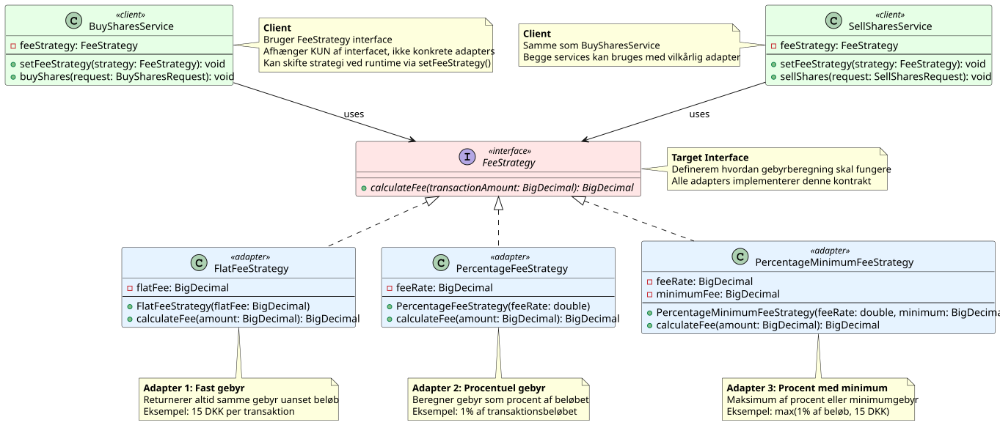

Hvilket problem løser Adapter Pattern?
- Inkompatible interfaces
- Tredjepartskode vi ikke kan ændre
- Legacy systemer

Software Design og Test

Target Interface: src/shared/logging/LogOutput.java
Adaptee (library): src/loggingLibrary/FileLogOutputter.java
Adapter: src/shared/logging/FileLogOutputterAdapter.java
Client / Wiring: src/presentation/core/ApplicationContext.java
// PROBLEM: FileLogOutputter har ikke den interface Logger forventer
// Logger er TÆTT koblet til loggingLibrary-klassen
public class Logger {
private FileLogOutputter fileLog =
new FileLogOutputter("app.log", "INFO");
public void log(LoggerLevel level, String message) {
// Logger skal kende ALLE FileLogOutputter's metoder
if (level == LoggerLevel.INFO)
fileLog.logInfo(message);
else if (level == LoggerLevel.WARNING)
fileLog.logWarning(message);
else if (level == LoggerLevel.ERROR)
fileLog.logError(message);
}
// Kan ikke byttes ud — Logger er låst til FileLogOutputter
}
Se: src/shared/logging/FileLogOutputterAdapter.java
// Adapter oversætter LogOutput → FileLogOutputter
public class FileLogOutputterAdapter implements LogOutput {
private final FileLogOutputter adaptee;
public FileLogOutputterAdapter(FileLogOutputter adaptee) {
this.adaptee = adaptee;
}
@Override
public void log(LoggerLevel level, String message) {
switch (level) {
case INFO -> adaptee.logInfo(message);
case WARNING -> adaptee.logWarning(message);
case ERROR -> adaptee.logError(message);
}
}
@Override
public void log(LoggerLevel level, String message, Throwable ex) {
log(level, message + " | " + ex.getMessage());
}
}
// ApplicationContext.java — sæt adapteren ind i Logger:
Logger.getInstance().setOutput(
new FileLogOutputterAdapter(
new FileLogOutputter("resources/logs/app.log", "INFO")
)
);
Adapter Proliferation